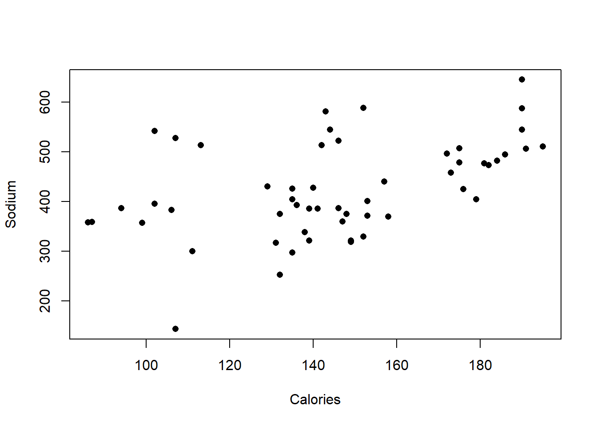
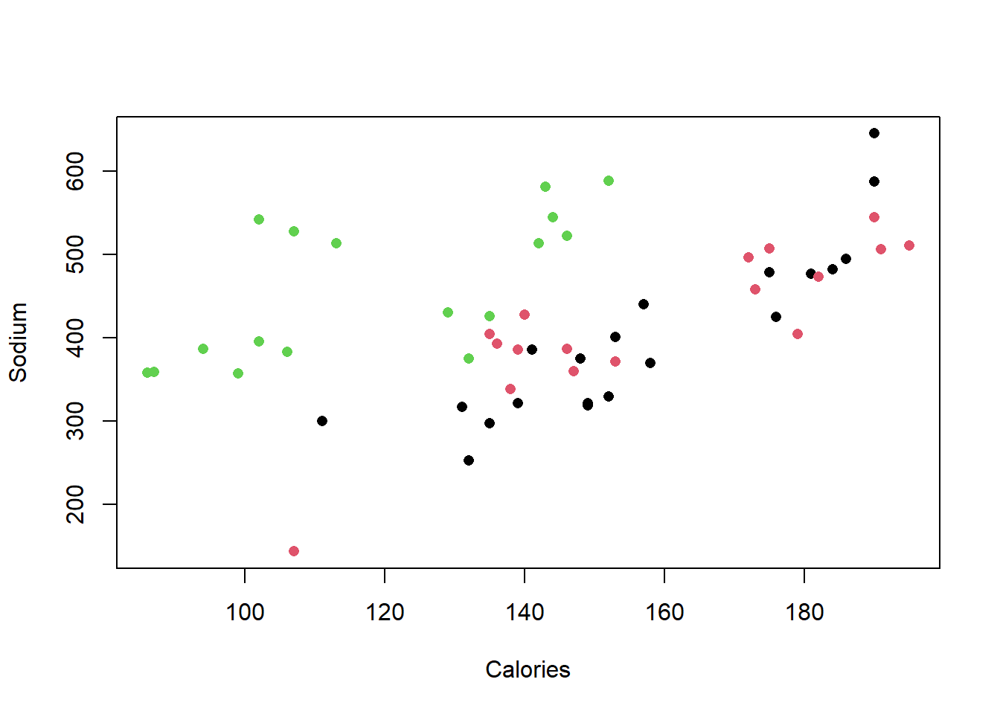
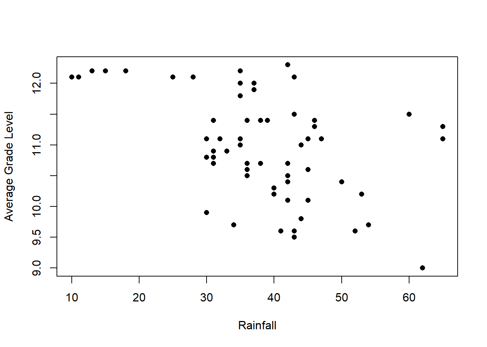
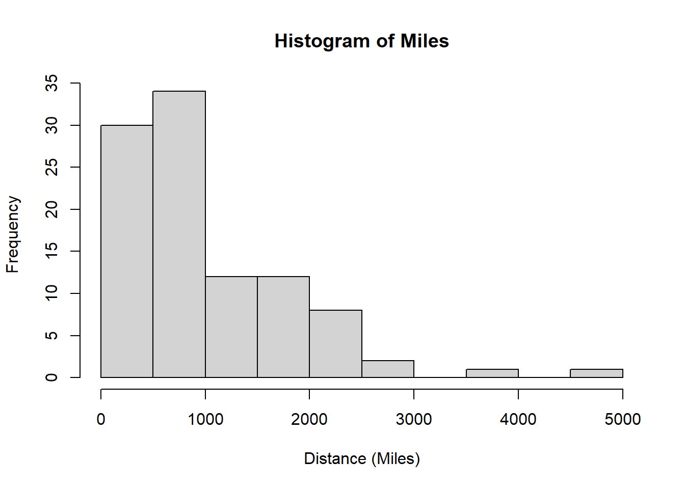
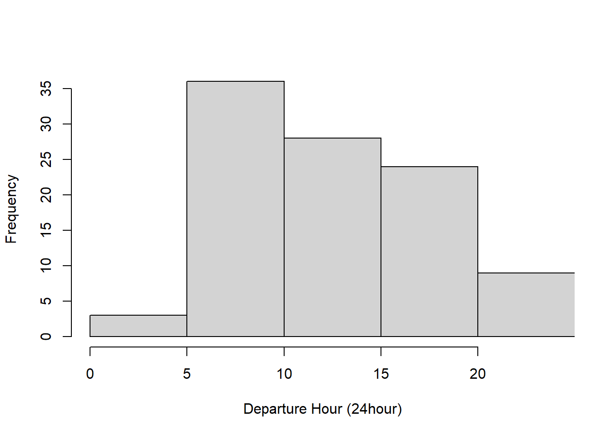
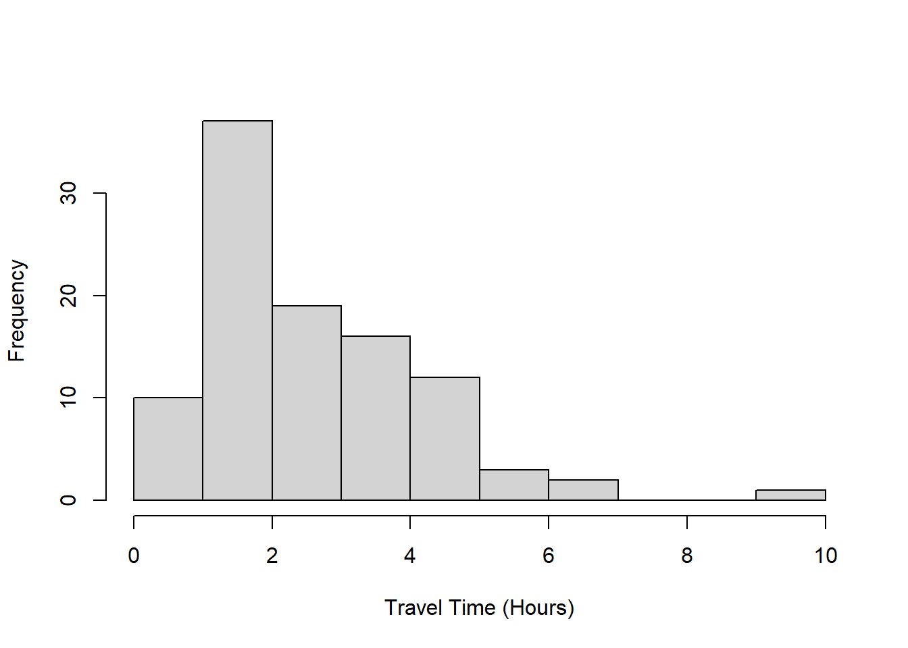
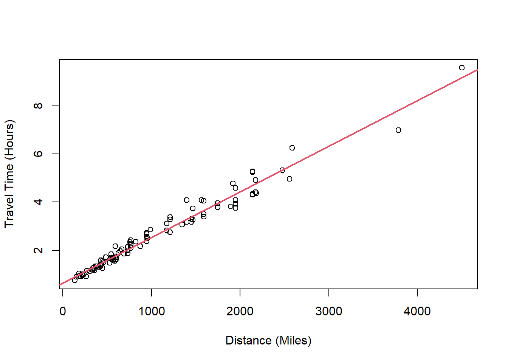
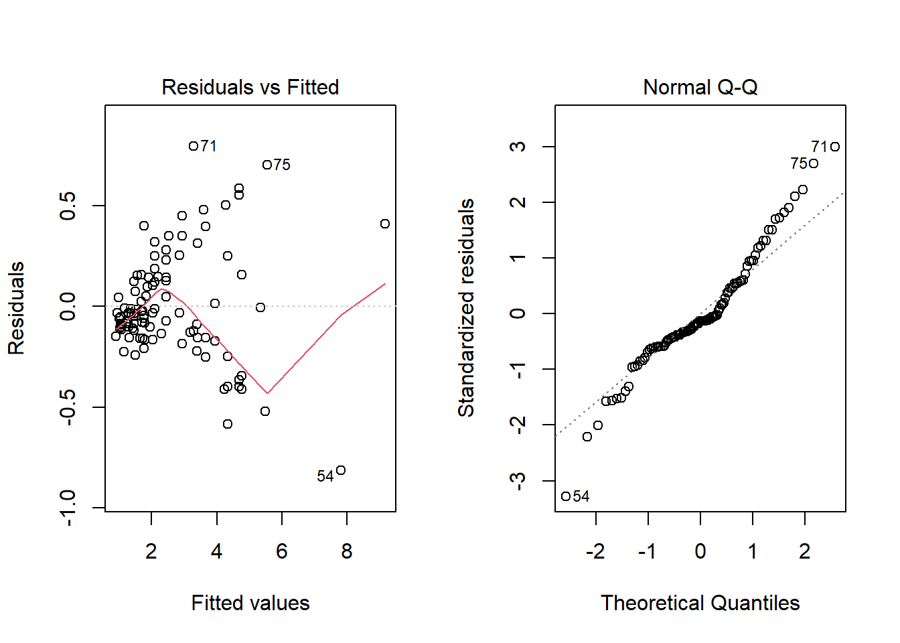

This is a demonstration file to go in lecture 01. I will run through it in front of the class.
Each of your assignments will begin with the following steps. You can always refer back to this lab (or lab 1) for a detailed list of the steps involved for getting started with an assignment.
FIGURES REMOVED and directories adjusted.
Click on the assignment link that you should have received in your email to create your GitHub repository (which we’ll refer to as “repo” going forward) for the assignment. This repo contains a template you can build on to complete your assignment.
Note that it’s not in your GitHub folder, it’s in the coursespace (so I can see it but you can’t see each other’s) and it is a copy of the template that I made to be here.
On GitHub, click on the green Clone or download button, select Use HTTPS (this might already be selected by default, and if it is, you’ll see the text Clone with HTTPS as in the image below). Click on the clipboard icon to copy the repo URL.
Go to RStudio clone the assignment repository.
#you need to change this to the right repository and location for you and your local machine
#usethis::create_from_github("https://github.com/bst-urmc/test-assignment-1-tanzylove",
# destdir="~/Documents/work/teaching/BST430/", fork=FALSE)Your email address is the address tied to your GitHub account and your name should be first and last name.
Before we can get started we need to take care of some required housekeeping. Specifically, we need to configure your git so that RStudio can communicate with GitHub. This requires two pieces of information: your email address and your name.
I put
usethis::use_git_config(
scope = "user",
user.name = "Tanzy Love",
user.email = "Tanzy_Love@urmc.rochester.edu")Next, we need to set up a personal access token so that you can write from rstudio cloud to github. To do this, enter use the following command into the Console:
usethis::create_github_token()Follow the instructions. Be sure to save the PAT in a password manager, you will have to re-enter it, depending on your set-up.
Read in some data.
hotdogs=read.table("Hdcalsod.TXT", header=T)
colnames(hotdogs)## [1] "Type" "Calories" "Sodium"hotdogs$Calories## [1] 186 181 176 149 184 190 158 139 175 148 152 111 141 153 190 157 131 149 135
## [20] 132 173 191 182 190 172 147 146 139 175 136 179 153 107 195 135 140 138 129
## [39] 132 102 106 94 102 87 99 107 113 135 142 86 143 152 146 144attach(hotdogs)
plot(Calories, Sodium, xlab="Calories", ylab="Sodium", pch=16)
cor(Calories, Sodium)## [1] 0.4671387plot(Calories, Sodium, xlab="Calories", ylab="Sodium",
col=factor(Type), pch=16)
Let’s try a different data set. This one about 50 states.
hsgrads=read.table("raingrad.TXT", header=T, sep="\t")
attach(hsgrads)
plot(Rain, Education,
xlab="Rainfall", ylab="Average Grade Level", pch=16)
cor(Rain, Education)## [1] -0.4758416args(cor)## function (x, y = NULL, use = "everything", method = c("pearson",
## "kendall", "spearman"))
## NULLAnd one final set of flying times.
delta=read.table("Deltafly.TXT", header=T)
attach(delta)
hist(Miles, xlab="Distance (Miles)")
hist(DepHr, main=NULL, xlab="Departure Hour (24hour)", xlim=c(0,24))
hist(TravTime, main=NULL, xlab="Travel Time (Hours)")
plot(Miles, TravTime, xlab="Distance (Miles)", ylab="Travel Time (Hours)")
cor(Miles, TravTime)## [1] 0.9850281reg.line=lm(TravTime~Miles) #calcuate the regression line for the Delta data
summary(reg.line)##
## Call:
## lm(formula = TravTime ~ Miles)
##
## Residuals:
## Min 1Q Median 3Q Max
## -0.81510 -0.13912 -0.03479 0.14409 0.79419
##
## Coefficients:
## Estimate Std. Error t value Pr(>|t|)
## (Intercept) 6.463e-01 4.340e-02 14.89 <2e-16
## Miles 1.894e-03 3.349e-05 56.56 <2e-16
##
## Residual standard error: 0.2662 on 98 degrees of freedom
## Multiple R-squared: 0.9703, Adjusted R-squared: 0.97
## F-statistic: 3199 on 1 and 98 DF, p-value: < 2.2e-16abline(reg.line, col=2, lwd=2)
par(mfrow=c(1,2)) #make both plots appear together
plot(reg.line, which=1:2) # plot residual assumption plots
par(mfrow=c(1,1)) #make only one plot appear at a timeMake a new file in RStudio or change the name in the header of this “lab00-hello-class.Rmd” file.
Then Go to the Git pane in your RStudio.
If you created a new file, you shoud see it’s name here. If you have made changes to your Rmd file, you should see it listed here. Click on the change to select it in this list and then click on Diff. This shows you the difference between the last committed state of the document and its current state that includes your changes. If you’re happy with these changes, write “Update author name” in the Commit message box and hit Commit.
You don’t have to commit after every change, this would get quite cumbersome. You should consider committing states that are meaningful to you for inspection, comparison, or restoration. In the first few assignments we will tell you exactly when to commit and in some cases, what commit message to use. As the semester progresses we will let you make these decisions.
Now that you have made an update and committed this change, it’s time to push these changes to the web! Or more specifically, to your repo on GitHub. Why? So that others can see your changes. And by others, we mean the course teaching team (your repos in this course are private to you and us, only).
In order to push your changes to GitHub, click on Push. This will prompt a dialogue box where you first need to enter your user name, and then your PAT.
Yay, you’re done! Commit all remaining changes, use the commit message “Done with Lab 0!”, and push. Before you wrap up the assignment, make sure all documents are updated on your GitHub repo.
You may not be able to do this on your own after lecture 0, so don’t worry about it!!